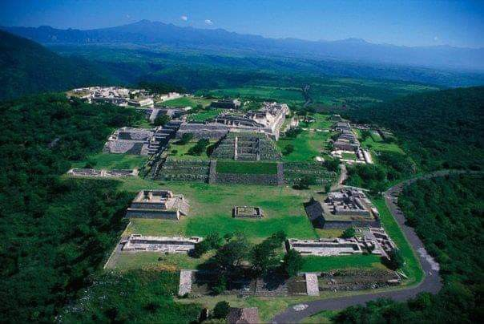
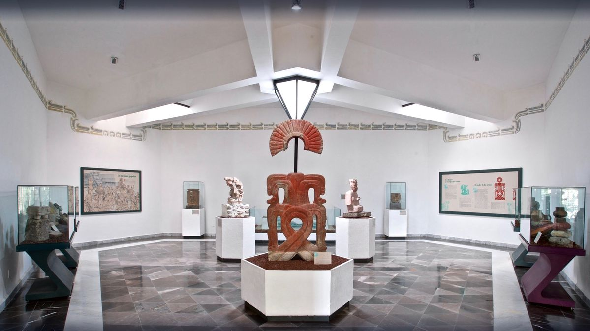

📸 Galería de Imágenes


🏛️ Historia y Reseña Completa
El Museo de Sitio de Xochicalco es un referente internacional por ser el primer museo 100% ecológico del mundo. El edificio fue diseñado bajo un concepto sustentable que aprovecha al máximo la luz natural, capta el agua de lluvia y opera de forma autónoma mediante paneles de energía solar. Su arquitectura moderna se integra armónicamente con la imponente vista del cerro donde se asienta la zona arqueológica, declarada Patrimonio de la Humanidad.
A través de sus seis salas permanentes, el museo resguarda y expone una valiosa colección de piezas arqueológicas rescatadas durante las excavaciones de esta antigua urbe del periodo Epiclásico. Destacan las impresionantes esculturas monolíticas, altares, elementos decorativos de la Pirámide de las Serpientes Emplumadas, estelas grabadas con glifos calendáricos y una muestra exhaustiva de la vida cotidiana, el comercio y la observación astronómica de los xochicalcas.